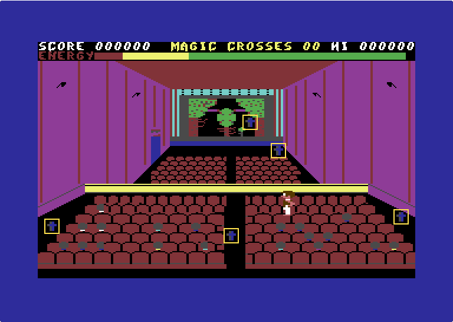
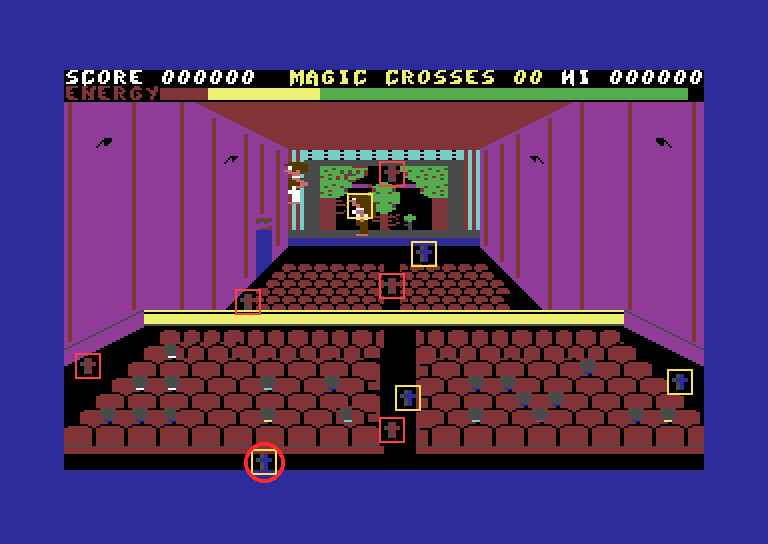
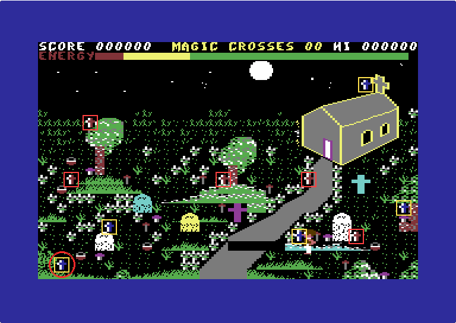

<meta charset="utf-8">
<meta name="viewport" content="width=device-width, initial-scale=1">
<title>{{title}}</title>
<link rel="preconnect" href="https://fonts.googleapis.com">
<link rel="stylesheet" href="https://fonts.googleapis.com/css2?family=Lato:wght@400;700;900&family=IBM+Plex+Mono:wght@400;500&display=swap">
<style>
:root{
  --bg:#23262d; --paper:#e9e7e1; --surface:#ffffff; --surface-2:#f1efea; --line:#d5d3cc; --line-soft:#e0ded8;
  --ink:#2f3136; --ink-soft:#55585f; --ink-mute:#80838a;
  --link:#1f5fa8; --link-hover:#154480; --accent:#1f5fa8;
  --amber:#c25a00; --cyan:#1f5fa8; --coral:#d04a3a; --green:#2a8a4a; --violet:#4a5bd6; --hl:#fff0c2;
  --chip:#2f3136; --chip-ink:#ffffff;
  --c64blue:#40318d; --c64grey:#686868;
  --fd:'Lato',system-ui,sans-serif; --fb:'Lato',system-ui,sans-serif; --fm:'IBM Plex Mono',ui-monospace,Menlo,monospace;
  --col:1080px; --gx:68px; --fs:17px; --lh:1.6; --hw:900; --h1:46px; --h2:26px; --sy:48px; --pp:26px; --r:10px;
  --plate-shadow:0 1px 2px rgba(0,0,0,.05),0 4px 14px rgba(0,0,0,.05);
}
*{box-sizing:border-box}
html{background:var(--bg);min-height:100%}
body{background:var(--paper);color:var(--ink);font-family:var(--fb);font-size:var(--fs);line-height:var(--lh);max-width:var(--col);margin:0 auto;min-height:100vh;padding:0 0 4rem}
h1,h2,h3{font-weight:var(--hw);letter-spacing:-.01em;text-wrap:balance;color:var(--ink);margin:0}
.wrap{padding:0 var(--gx)}
.hero{padding:48px var(--gx) 8px;text-align:left}
.eyebrow{font-family:var(--fm);font-size:12px;letter-spacing:.08em;text-transform:uppercase;color:var(--ink-mute);margin:0 0 10px}
.hero h1{font-size:var(--h1);line-height:1.15;letter-spacing:-.02em;margin:0 0 14px}
.hero .sub{margin:0 0 .6em;color:var(--ink-soft)}
section{padding:var(--sy) 0 24px}
section:last-of-type{border-bottom:none}
.fig{font-family:var(--fm);font-size:12px;letter-spacing:.08em;text-transform:uppercase;color:var(--ink-mute);margin:0 0 10px}
h2.t{font-size:var(--h2);margin-bottom:12px}
.lede{color:var(--ink-soft);margin:0 0 30px}
.plate{background:var(--surface);border:1px solid var(--line);border-radius:var(--r);padding:var(--pp);box-shadow:var(--plate-shadow)}
.cap{font-size:14px;color:var(--ink-mute);margin-top:14px;line-height:1.55}
.cap b{color:var(--ink);font-weight:700}
code{font-family:var(--fm);font-size:.82em;background:var(--chip);color:var(--chip-ink);border-radius:4px;padding:2px 6px;white-space:nowrap}
.shots{display:grid;grid-template-columns:repeat(auto-fill,minmax(300px,1fr));gap:18px}
.shots figure{margin:0}
.shots img{width:100%;height:auto;display:block;image-rendering:pixelated;border-radius:4px}
.shots figcaption{font-size:14px;color:var(--ink-mute);margin-top:8px;line-height:1.5}
table.t{border-collapse:collapse;width:100%;font-size:15px}
table.t th,table.t td{text-align:left;padding:7px 10px;border-bottom:1px solid var(--line-soft);vertical-align:top}
table.t th{font-weight:700;color:var(--ink-soft)}
.row{display:flex;flex-wrap:wrap;gap:8px;align-items:center;margin:0 0 14px}
button.b{font-family:var(--fm);font-size:13px;padding:6px 11px;border:1px solid var(--line);border-radius:6px;background:var(--surface-2);color:var(--ink);cursor:pointer}
button.b[aria-pressed="true"]{background:var(--chip);color:var(--chip-ink);border-color:var(--chip)}
button.b:hover{border-color:var(--ink-mute)}
.scr{width:100%;max-width:768px;height:auto;display:block;image-rendering:pixelated;border-radius:4px;background:#000}
.two{display:grid;grid-template-columns:1fr 1fr;gap:18px}
@media (max-width:760px){.two{grid-template-columns:1fr}:root{--gx:20px;--h1:34px}}
.two img{width:100%;height:auto;image-rendering:pixelated;border-radius:4px;display:block}
.kv{font-family:var(--fm);font-size:13px;color:var(--ink-soft);margin:10px 0 0}
.kv b{color:var(--ink)}
.legend{display:flex;flex-wrap:wrap;gap:12px;font-size:14px;color:var(--ink-soft);margin:10px 0 0}
.legend i{display:inline-block;width:12px;height:12px;border-radius:2px;margin-right:6px;vertical-align:-1px}
.bar{height:14px;border-radius:3px;background:var(--surface-2);border:1px solid var(--line);overflow:hidden}
.bar>i{display:block;height:100%;background:var(--green)}
input[type=range]{width:100%}
.stage{position:relative}
.note{font-size:14px;color:var(--ink-mute)}
.secrets{list-style:none;counter-reset:s;padding:0;margin:0;display:flex;flex-direction:column;gap:26px}
.secrets li{counter-increment:s;padding-left:46px;position:relative}
.secrets li::before{content:counter(s,decimal-leading-zero);position:absolute;left:0;top:1px;font-family:var(--fm);font-size:12px;color:var(--amber);border:1px solid var(--line);border-radius:6px;padding:3px 7px;background:var(--surface-2)}
.secrets h3{font-size:17px;margin-bottom:7px}
.secrets p{margin:0 0 9px}
.secrets p.where{font-family:var(--fm);font-size:12px;color:var(--ink-mute)}
</style>
<!--
  Chiller's How it works page. Copy: Gold editorial pass (kit/style.md), every widget drawn from the
  game's own bytes in listing.json through ../../lib/c64.js and ../../lib/sid.js. The screen
  builder is compose() and the music port createDriver(); both are checked against the game in
  work/ (test_frame.js with kit/c64/frame.py compare, test_music.js in kit/c64/cpu6502.js).
-->
<!-- tabs -->
<header class="hero">
  <p class="eyebrow">{{platform}} · {{year}} · {{publisher}}</p>
  <h1>{{title}}</h1>
  <p class="sub">A boy crosses five haunted levels, collecting magic crosses, to rescue his girlfriend, then the two of them play the same five levels back home. One cross on the way back can never be reached, so nobody gets home.</p>
</header>
<main class="wrap">
<section id="screens">
  <p class="fig">01 · The screen</p>
  <h2 class="t">One screen, rebuilt from 128 bytes</h2>
  <p class="lede">Each of Chiller's ten screens is set up from its own 128 bytes of settings. They say where to find the screen's play area, character set and colours, and where to put its two players, its five enemies and its ten crosses. The picture below is drawn by this page from those bytes. Pick a screen, and switch on the tiles the boy can stand on, the ledges that crumble and the pick-ups.</p>
  <div class="plate">
    <div class="row" id="scr-pick"></div>
    <div class="row">
      <button class="b" type="button" data-ov="solid" aria-pressed="false">Solid tiles</button>
      <button class="b" type="button" data-ov="ledge" aria-pressed="false">Crumbling ledges</button>
      <button class="b" type="button" data-ov="pick" aria-pressed="false">Mushrooms and bonuses</button>
      <button class="b" type="button" data-ov="cross" aria-pressed="true">Crosses</button>
    </div>
    <canvas id="scr" class="scr" width="768" height="544" role="img" aria-label="A Chiller screen rebuilt from its settings"></canvas>
    <p class="kv" id="scr-kv"></p>
    <div class="legend" id="scr-legend"></div>
    <p class="cap" id="scr-cap"></p>
  </div>
  <p>The ten screens' settings sit at <code>$7000</code>-<code>$757F</code>. <code>setup_screen</code> (<code>$5E19</code>) reads them field by field, in the order below. The first five levels keep their graphics at <code>$8000</code>-<code>$B1FF</code>, one <code>$A00</code> block each, and the way back borrows them.</p>
  <table class="t">
    <tr><th>Field</th><th>Offset</th><th>Read by</th></tr>
    <tr><td>Play area: source, end, destination</td><td><code>+$00</code></td><td><code>setup_screen</code>, <code>copy_block</code> <code>$2A80</code></td></tr>
    <tr><td>Character set: source, end, destination</td><td><code>+$06</code></td><td>the same</td></tr>
    <tr><td>Colour map, two cells to a byte</td><td><code>+$0C</code></td><td><code>unpack_colours</code> <code>$5D20</code></td></tr>
    <tr><td>Multicolours 1 and 2</td><td><code>+$0E</code>, <code>+$0F</code></td><td>into <code>$D022</code>, <code>$D023</code></td></tr>
    <tr><td>The two players' start and frames</td><td><code>+$10</code>-<code>+$17</code></td><td><code>set_boy_x</code> <code>$7F20</code> and on</td></tr>
    <tr><td>Enemies: frames, speeds, paths</td><td><code>+$18</code>-<code>+$5D</code></td><td><code>spawn_enemy</code>, <code>enemy_step</code></td></tr>
    <tr><td>Ten cross addresses, five blue then five red</td><td><code>+$5E</code>-<code>+$71</code></td><td><code>place_crosses</code> <code>$5FC0</code>, <code>colour_cycle</code> <code>$7F80</code></td></tr>
    <tr><td>Crosses needed, level byte, card</td><td><code>+$72</code>, <code>+$73</code>, <code>+$74</code></td><td><code>crosses_left</code> <code>$7F00</code>, <code>show_level_card</code></td></tr>
  </table>
  <p class="cap">The way-back screens are drawn here over the untouched first five levels, which is what a player sees who took only the crosses. All ten, with their enemy paths and pick-ups, are on the <a href="levels.html">Maps / levels</a> tab.</p>
</section>
<section id="cast">
  <p class="fig">02 · The cast</p>
  <h2 class="t">A boy, a girl and seventeen kinds of enemy</h2>
  <p class="lede">The boy and the girl share one set of moves: four frames walking each way, two in the air and two standing. Every level brings five enemies, drawn from seventeen different animations that the levels share between them. Flip through each level's five.</p>
  <div class="plate">
    <canvas id="pl" width="720" height="140" class="scr" style="max-width:720px" role="img" aria-label="The boy's and the girl's sprite frames"></canvas>
    <p class="cap">The boy's frames at <code>$3600</code> (pointers <code>$D8</code>-<code>$E7</code>), the girl's at <code>$3A00</code> (<code>$E8</code>-<code>$F7</code>), in the order the game uses them: walking left, walking right, jumping, standing.</p>
  </div>
  <div class="plate" id="enemies" style="margin-top:18px">
    <div class="row" id="en-pick"></div>
    <canvas id="en" width="720" height="132" class="scr" style="max-width:720px" role="img" aria-label="The enemy animation frames of the chosen screen"></canvas>
    <p class="kv" id="en-kv"></p>
    <p class="cap">Four frames per enemy, in the order the game steps through them. Colours are the ones the game sets on arrival (<code>$D029</code>-<code>$D02D</code>); multicolour sprites share <code>$D025</code> and <code>$D026</code>.</p>
  </div>
  <p>The girl's frames sit exactly 16 pointers after the boy's, so one set of routines can draw either. <code>player_swap</code> (<code>$576B</code>) adds or takes away that 16 in the three places the frame numbers are kept.</p>
  <p>The enemies live on sprites 2 to 6, and a sixth on sprite 7 is thrown in from one of them now and then. Their shapes are named in the screen's settings. Most are stored at <code>$2000</code>-<code>$29FF</code>, and seven of the ten screens also use a second store at <code>$0B00</code>-<code>$0FFE</code>.</p>
</section>
<section id="controls">
  <p class="fig">03 · Controls</p>
  <h2 class="t">Joystick or keyboard</h2>
  <p class="lede">As the title screen says, there are two ways to play: a joystick in control port 2, or the keys Z, C, ? and SHIFT. The game reads the joystick port itself, and leaves the keyboard to the Commodore's built-in routines.</p>
  <figure style="margin:0 0 24px"><figcaption class="cap">The title screen, captured in an emulator.</figcaption></figure>
  <table class="t">
    <tr><th>Joystick; keyboard</th><th>Read as</th><th>Does</th></tr>
    <tr><td>Stick (port 2) left, right; Z, C</td><td><code>$DC00</code> bits 2, 3; key codes <code>$0C</code>, <code>$14</code> in <code>$C5</code></td><td>walk</td></tr>
    <tr><td>Stick up; SHIFT</td><td><code>$DC00</code> bit 0; the shift flag <code>$028D</code></td><td>jump</td></tr>
    <tr><td>Fire; <code>?</code></td><td><code>$DC00</code> bit 4; key code <code>$37</code></td><td>switch players, way back only</td></tr>
    <tr><td>SPACE</td><td>key code <code>$3C</code>, listed twice as up</td><td>nothing: up is off on every screen</td></tr>
  </table>
  <p>The key table (<code>$4512</code>) is part of the level settings, so each screen could have had its own keys. All ten have the same.</p>
</section>
<section id="wayback">
  <p class="fig">04 · The world</p>
  <h2 class="t">To the haunted house and home again</h2>
  <p class="lede">The boy works through five haunted levels, the forest, the cinema, the ghetto, the graveyard and the haunted house, to reach his girlfriend. He cannot leave a level until he has collected its five blue crosses. After the haunted house the two of them head home through the same five levels in reverse. The game reuses each level exactly as he left it: a mushroom he ate, a cross he took and a ledge that crumbled under him are all still gone.</p>
  <div class="two">
    <figure style="margin:0"><figcaption class="cap">The cinema on the way to the house: five blue crosses for the boy.</figcaption></figure>
    <figure style="margin:0"><figcaption class="cap">The cinema on the way home. The boy (left of the stage) and the girl (on it) stand where the level starts them, and five red crosses have been added to the five blue. Both pictures are drawn from the screens' settings; the enemies are not shown.</figcaption></figure>
  </div>
  <p>The way home has no levels of its own: it reuses the first five. When the boy has taken a level's crosses and moves on, <code>next_screen</code> (<code>$7680</code>) saves screen rows 1 to 24, and on the way home the game reads that copy back. The forest goes to <code>$7800</code>. The other four have no room left in ordinary memory, so they go into the RAM hidden under the KERNAL ROM, at <code>$E000</code>, <code>$E400</code>, <code>$E800</code> and <code>$EC00</code>. A write to those addresses lands in the RAM even with the ROM switched in. Reading it back needs the ROM switched out, and that is all <code>copy_under_kernal</code> (<code>$72A4</code>) does: it sets the processor port <code>$01</code> to <code>$34</code>, copies, and puts it back.</p>
  <table class="t">
    <tr><th>Level on the way home</th><th>Settings at</th><th>Play area read from</th><th>Character set and colours from</th></tr>
    <tr><td>Haunted house</td><td><code>$7300</code></td><td><code>$EC28</code></td><td>the house's, <code>$A800</code>, <code>$B000</code></td></tr>
    <tr><td>Graveyard</td><td><code>$7380</code></td><td><code>$E828</code></td><td>the graveyard's</td></tr>
    <tr><td>Ghetto</td><td><code>$7400</code></td><td><code>$E428</code></td><td>the ghetto's</td></tr>
    <tr><td>Cinema</td><td><code>$7480</code></td><td><code>$E028</code></td><td>the cinema's</td></tr>
    <tr><td>Forest</td><td><code>$7500</code></td><td><code>$7828</code></td><td>the forest's</td></tr>
  </table>
  <p>The red crosses are added on the way home. The settings for the first five levels list five crosses each and those for the way home list ten, so <code>place_crosses</code> writes the five red ones into the saved copy as the level is set up.</p>
</section>
<section id="crosses">
  <p class="fig">05 · The crosses</p>
  <h2 class="t">Blue for him, red for her</h2>
  <p class="lede">Every cross is the same character, tile <code>$57</code>. The only thing that makes it the boy's or the girl's is its colour. Pick a character and a cross colour to see what <code>cross_touch</code> does.</p>
  <div class="plate">
    <div class="row">
      <button class="b" type="button" data-who="0" aria-pressed="true">The boy</button>
      <button class="b" type="button" data-who="1" aria-pressed="false">The girl</button>
      <span class="note">touches a</span>
      <button class="b" type="button" data-col="14" aria-pressed="true">blue cross</button>
      <button class="b" type="button" data-col="10" aria-pressed="false">red cross</button>
    </div>
    <canvas id="xc" width="384" height="120" class="scr" style="max-width:384px" role="img" aria-label="The character and the cross"></canvas>
    <p class="kv" id="xc-kv"></p>
  </div>
  <p><code>cross_touch</code> (<code>$7F50</code>) reads the colour under the cross and tests one bit. Light blue is 14 (<code>%1110</code>) and light red is 10 (<code>%1010</code>), so bit 2 tells them apart. A match replaces the cross with a space and counts it off the MAGIC CROSSES counter (<code>cross_count</code>, <code>$5B5E</code>). The crosses flash because every 40th pass <code>colour_cycle</code> (<code>$7F80</code>) takes 8 off each cross's colour and then puts it back.</p>
  <p>Going out, only the boy plays, and each screen needs its five blue crosses. On the way back the girl comes too, and all ten are needed. Fire, or the <code>?</code> key, swaps who you control. <code>switch_allowed</code> (<code>$7280</code>) refuses before the first way-back screen, as the inlay says. The border shows who is playing: blue for the boy, light red for the girl.</p>
  <p>A swap does not move anyone. <code>player_swap</code> exchanges the two sprites, positions and all, so whoever you control is always sprite 0. The one left behind stands still, and still loses energy when an enemy touches it (<code>girl_touch</code>, <code>$CD9D</code>).</p>
</section>
<section id="energy">
  <p class="fig">06 · Energy</p>
  <h2 class="t">No lives, and every step costs</h2>
  <p class="lede">Chiller has no lives. You have one energy bar to manage, and when it empties the game is over. Enemies and toadstools drain it and mushrooms fill it. Unusually, walking and jumping cost energy too. Try each on the bar below, which uses the game's own step sizes.</p>
  <div class="plate">
    <div class="row">
      <button class="b" type="button" data-e="walk">Walk 1,000 passes</button>
      <button class="b" type="button" data-e="touch">An enemy runs into you</button>
      <button class="b" type="button" data-e="toad">Eat a toadstool</button>
      <button class="b" type="button" data-e="mush">Eat a mushroom</button>
      <button class="b" type="button" data-e="reset">Full bar</button>
    </div>
    <canvas id="eb" width="560" height="32" class="scr" style="max-width:560px" role="img" aria-label="The energy bar as the game draws it"></canvas>
    <p class="kv" id="eb-kv"></p>
    <p class="cap">Drawn with the game's own bar characters, <code>$A1</code>-<code>$A9</code>, in the forest's colours: 33 cells of eight steps. An empty bar ends the game.</p>
  </div>
  <table class="t">
    <tr><th>What</th><th>Effect on the bar</th><th>Where</th></tr>
    <tr><td>Walking</td><td>one step every 765 passes of the main loop with a direction held</td><td><code>walk_drain</code> <code>$5A20</code></td></tr>
    <tr><td>Jumping</td><td>one step each time a counter runs out in the air</td><td><code>drain_step</code> <code>$59E6</code></td></tr>
    <tr><td>Standing still</td><td>nothing</td><td><code>drain_step</code></td></tr>
    <tr><td>An enemy sprite overlapping yours</td><td>two steps, again every pass it stays</td><td><code>sprite_touch</code> <code>$CE87</code></td></tr>
    <tr><td>A toadstool, tile <code>$55</code></td><td>24 steps, one every 18 calls, each with a border flash</td><td><code>poison_tick</code> <code>$5B2C</code></td></tr>
    <tr><td>A mushroom, tile <code>$54</code></td><td>23 steps back, one every 16 calls; on a full bar, 10 points each instead</td><td><code>energy_tick</code> <code>$5B00</code></td></tr>
    <tr><td>A bonus, tile <code>$56</code></td><td>100 points, no energy</td><td><code>tile_touch_b</code> <code>$5AC7</code></td></tr>
  </table>
  <p>The inlay says walking, running and jumping each cost more than the last. There is no running in the code. There is one walking speed, and it gets slower as the bar empties: once the bar's seventh cell is no longer full, <code>bar_speed</code> (<code>$5961</code>) patches the main loop to read the controls every 128 passes instead of every 32. An empty bar goes straight to GAME OVER (<code>out_of_energy</code>, <code>$5A70</code>).</p>
</section>
<section id="jump">
  <p class="fig">07 · The jump</p>
  <h2 class="t">Jump to go up, fall as far as you like</h2>
  <p class="lede">The jump is 24 one-pixel steps up, each a little slower than the last, and the same steps back down in reverse. Scrub through it. However far the boy falls afterwards, he lands unhurt.</p>
  <div class="plate">
    <input type="range" id="jr" min="0" max="48" value="0" aria-label="Step of the jump">
    <canvas id="jc" width="600" height="180" class="scr" style="max-width:600px" role="img" aria-label="The jump's height over time"></canvas>
    <p class="kv" id="jk"></p>
    <p class="cap">Height against time from <code>jump_speeds</code> at <code>$544A</code>: the number of main-loop passes before each step. The boy is drawn in his jumping frame from the game's sprite data.</p>
  </div>
  <p>Up on the stick, or SHIFT, starts a jump (<code>start_jump</code>, <code>$5418</code>) unless he is already falling. In the air the game switches the controls off by writing an <code>RTS</code> over the first byte of <code>read_controls</code> (<code>$C84D</code>), so he keeps the direction he took off in until he lands. There is no climbing. All ten screens switch off up and down as walking directions (<code>$4500</code>-<code>$4503</code>), so the only way up is to jump.</p>
  <p>Some ledges crumble. Tiles <code>$4D</code>-<code>$53</code> are one ledge in seven stages. Every eighth step on it moves it on a stage, and the last stage is empty space (<code>tile_touch_a</code>, <code>$5A9A</code>). Stand on a crumbling ledge too long and it drops you.</p>
</section>
<section id="paths">
  <p class="fig">08 · The enemies</p>
  <h2 class="t">You can't kill them, only keep out of the way</h2>
  <p class="lede">An enemy that runs into the character you control costs energy and nothing else. It carries on along its path, and it cannot be killed.</p>
  <p>The game has no hit test of its own: <code>sprite_touch</code> (<code>$CE87</code>) reads the hardware's sprite collision register, <code>$D01E</code>, and when your sprite and exactly one enemy sprite overlap, two steps of poison go on the bar. Stand still at the start of the forest and the bar holds for 16 seconds, until an enemy wanders onto him and takes 69 steps in a single visit.</p>
  <p>The enemies follow scripts of direction bytes (0 up, 1 down, 2 left, 3 right), each ended by <code>$FF</code>, at <code>path_scripts</code> (<code>$4A00</code>-<code>$4A8F</code>). <code>path_step</code> (<code>$CC12</code>) moves an enemy one pixel every few passes and reads the next byte every 8th move. Nine scripts serve all fifty slots. Three walk down and back up, four hold one direction for ever, and three are long runs down with one stray byte that matches none of the four directions, so it does nothing. Step through any enemy's script on the <a href="levels.html">Maps / levels</a> tab.</p>
  <p>An enemy that walks off an edge comes back later: <code>respawn_timer</code> (<code>$2FB2</code>) gives an empty slot a chance out of 128 (<code>$45E2</code>) to return.</p>
</section>
<section id="music">
  <p class="fig">09 · Music</p>
  <h2 class="t">The music is tuned for an NTSC C64</h2>
  <p class="lede">The game's music is played here by its own driver, ported line by line. Press a tune.</p>
  <div class="plate">
    <div id="sid"></div>
    <p class="cap">Every sound-chip write the port makes matches the game's own driver, in the same order. Two things differ from a real C64. This player leaves out the sound chip's filter, which the game sets once and keeps on voice 1 for the whole tune (<code>music_init_filter</code>, <code>$60A0</code>), so voice 1 sounds brighter here than it should. And it plays at PAL speed, so the notes are flat, as they were on PAL machines.</p>
  </div>
  <p>Of the in-play tune's 478 frequency values, 464 land within two cents of a note on an NTSC machine, the kind sold in North America. A PAL machine, the kind sold in Europe, runs about 4 % slower, so there every note plays about a third of a semitone flat.</p>
  <p>The driver runs on the system interrupt, 60 times a second, on two voices. Each command is one byte, and the byte is the low half of its handler's address in page <code>$61</code>. <code>music_next_command</code> (<code>$6100</code>) writes it into its own <code>JMP</code> at <code>$610B</code> and jumps, so the tune data is a list of jump targets.</p>
  <table class="t">
    <tr><th>Byte</th><th>Handler</th><th>What it does</th></tr>
    <tr><td><code>$0E</code>, <code>$26</code></td><td><code>$610E</code>, <code>$6126</code></td><td>a note on voice 1 or 2: frequency high, low; gate off and on</td></tr>
    <tr><td><code>$3E</code></td><td><code>$613E</code></td><td>a note on both voices</td></tr>
    <tr><td><code>$56</code></td><td><code>$6156</code></td><td>retrigger both voices</td></tr>
    <tr><td><code>$6B</code></td><td><code>$616B</code></td><td>set the tempo: interrupts per step</td></tr>
    <tr><td><code>$74</code></td><td><code>$6174</code></td><td>end the step: wait for the tempo</td></tr>
    <tr><td><code>$7C</code></td><td><code>$617C</code></td><td>count: tells the game the tune has reached its end</td></tr>
    <tr><td><code>$82</code>, <code>$91</code>, <code>$AC</code></td><td></td><td>waveforms, envelopes, pulse widths</td></tr>
    <tr><td><code>$C7</code></td><td><code>$61C7</code></td><td>loop to the start</td></tr>
  </table>
  <p>The count command is how the music talks to the game. The card at the start of each level stays up until the level-start tune counts (<code>card_wait</code>, <code>$7610</code>), and GAME OVER stays up until the game-over tune does (<code>$5DA9</code>). The in-play tune never counts. It loops after about 69 seconds.</p>
</section>
<section id="secrets">
  <p class="fig">10 · Secrets</p>
  <h2 class="t">Things the manual never told you</h2>
  <p class="lede">None of these are in the instructions. Most are in code a player never reaches, and the first is why nobody finished the game. Each ends with where to look.</p>
  <ol class="secrets">
    <li id="unwinnable">
      <h3>The game cannot be finished</h3>
      <p>On the way back every screen needs all ten of its crosses before it lets you go. On three of those screens, one blue cross sits lower than the boy can ever stand. The first of them is the graveyard, the seventh screen, and that is as far as anyone gets.</p>
      <div class="two" style="margin:12px 0">
        <figure style="margin:0"><figcaption class="cap">The graveyard on the way back, drawn from its settings. Boxes mark the crosses; the ringed blue one is in the bottom two rows, where no player can reach it.</figcaption></figure>
        <figure style="margin:0"><figcaption class="cap">The cinema on the way back has the same fault. So does the ghetto, which comes between them.</figcaption></figure>
      </div>
      <p>The cause is a single compare. <code>move_sprite</code> stops the boy's sprite at Y <code>$E3</code>, row 22 of the screen's 24, before it looks at any scenery. Even falling through open space with nothing underneath, he halts there in mid-air. The game looks for a cross in the cell his position maps to, and from Y <code>$E3</code> that is never lower than row 22, so a cross in row 23 or 24 can never be taken. The other seven screens can be cleared: searching each one with the game's own movement rules finds a path to every cross, and the <a href="levels.html">Maps / levels</a> tab rings the three it cannot reach. A commenter on Lemon64 remembers Chiller as impossible to finish because one cross was out of reach, and says a later crack fixed it.</p>
      <p class="where"><code>cmp #$E3</code> at <code>$C930</code> · crosses at <code>$079A</code> (graveyard), <code>$07C5</code> (ghetto), <code>$07CC</code> (cinema)</p>
    </li>
    <li>
      <h3>There is a shooting game underneath</h3>
      <p>Chiller has no gun and no scrolling. Its code has both: a shot hitting an enemy, the enemy dying and points per enemy, and a scroller that moves the whole play area a cell at a time. Nothing calls the shooting code, and every screen sets the scroller's period to <code>$FF</code>, off. There are screen-editor tools too, a box drawer, a character plotter and fills, that call only each other, and a fire button that would bring in the second character on a screen without gravity, which Chiller never has.</p>
      <p class="where"><code>unused_shot_hit</code> <code>$CDC7</code> · <code>unused_kill_enemy</code> <code>$2F7B</code> · <code>add_score_for</code> <code>$CE6B</code> · <code>scroll_left</code> <code>$C412</code> · <code>unused_editor_tools</code> <code>$5198</code> · <code>switch_check</code> <code>$C7D4</code></p>
    </li>
    <li>
      <h3>Lives are in the code, not in the game</h3>
      <p>A starting count of lives, a routine that takes one and another that restarts the screen are all there. They are reached only from the shooting code above, which nothing calls.</p>
      <p class="where"><code>new_life</code> <code>$CAED</code> · <code>lose_life</code> <code>$CEDA</code> · the count at <code>$45ED</code></p>
    </li>
    <li>
      <h3>Fall damage was written, then switched off twice</h3>
      <p>Falls are counted, and on landing the count is compared with a limit. The branch after that compare has been overwritten with <code>NOP</code>s, and the limit is <code>$FF</code> anyway.</p>
      <p class="where"><code>land</code> <code>$53EF</code> · the limit at <code>$457A</code></p>
    </li>
    <li>
      <h3>A second sound player, silenced</h3>
      <p>A sound player with a 56-note table still runs through its notes. Every one of its sound-chip stores is aimed at <code>$FFFF</code>, the last byte of memory, so it makes no sound.</p>
      <p class="where"><code>unused_sound_player</code> <code>$CA80</code> · the note table at <code>$C300</code></p>
    </li>
    <li>
      <h3>The crosses were once silver</h3>
      <p>Three of the five outward screens carry a spare score line that is never shown. It says SILVER CROSSES where the game says MAGIC CROSSES.</p>
      <div class="plate" style="margin:12px 0"><canvas id="silver" width="640" height="64" class="scr" style="max-width:640px" role="img" aria-label="The unused SILVER CROSSES score line above the one the game shows"></canvas>
      <p class="cap">Top: <code>hud_cinema</code> at <code>$8E00</code>, never copied to the screen. Bottom: <code>hud_template</code> at <code>$8400</code>, the one the game uses. Both drawn with the game's own letters.</p></div>
      <p class="where"><code>hud_cinema</code> <code>$8E00</code> · <code>hud_template</code> <code>$8400</code></p>
    </li>
    <li id="menu">
      <h3>PRESS CTRL FOR MENU was never finished</h3>
      <p>After GAME OVER the game still calls a routine meant to put PRESS CTRL FOR MENU on the bottom row. The routine reads the text, the screen and the colours, and writes nothing. It looks like a feature left out before release, with its prompt stubbed so it never shows. An older forest card is left behind the same way, its printer never called.</p>
      <div class="plate" style="margin:12px 0"><canvas id="ctrl" width="640" height="32" class="scr" style="max-width:640px" role="img" aria-label="PRESS CTRL FOR MENU drawn from the game's bytes"></canvas>
      <p class="cap">The text at <code>$574A</code>, drawn here as it would have looked. The routine loops 19 times over <code>LDA $574A,X</code>, <code>LDA $07CA,X</code>, <code>LDA $D805</code>, <code>LDA $DBCA,X</code>: four loads and no store.</p></div>
      <p class="where"><code>show_press_ctrl</code> <code>$5736</code> · <code>card_forest_title</code> <code>$5D0D</code>, printer <code>$5E00</code></p>
    </li>
    <li>
      <h3>The enemies can speed up, but nobody has seen it</h3>
      <p>Each enemy slot has a count the code calls lives. A life here is one entrance: coming back on screen uses one, and leaving by an edge gives it back. When every slot has used up its count and all five are off the screen, a LEVEL counter goes up, is shown over the play area, and every enemy's movement and animation delays are halved. Edges refund a life and most slots start with 200, so play does not seem to get there.</p>
      <p class="where"><code>level_up</code> <code>$2C19</code> · <code>speed_up</code> <code>$5681</code> · counts at <code>$CF76</code>, from <code>$45E7</code></p>
    </li>
    <li id="slips">
      <h3>The jump sound should rise as he falls</h3>
      <p>The routine adds 5 to the frequency's low byte, but its carry test branches to the very next instruction. The high byte goes down by one every step regardless, and the pitch keeps dropping.</p>
      <p class="where"><code>jump_pitch_fall</code> <code>$5518</code> · the branch at <code>$5524</code></p>
    </li>
    <li>
      <h3>The title should flicker two colours</h3>
      <p>On the title after a game, the flicker routine is meant to change both multicolour registers, <code>$D022</code> and <code>$D023</code>. Its second store goes to <code>$7523</code>, a byte in the last screen's settings, so only one flickers.</p>
      <p class="where"><code>title_flicker</code> <code>$7580</code></p>
    </li>
  </ol>
</section>
<section id="unsure">
  <p class="fig">11 · Open questions</p>
  <h2 class="t">What we're still unsure of</h2>
  <ul>
    <li>Which release this is: the withdrawn <i>Thriller</i> version or the later one. The two releases have different music, and both tunes are transcribed in the <a href="https://github.com/unorig/Chiller/tree/Latest/Music">unorig/Chiller</a> disassembly. This copy's player and all 4,238 bytes of its tune data match the one marked Version 1 there, and none of the other's. Which of the two carried the <i>Thriller</i> tune is not settled here.</li>
    <li>Whether the LEVEL counter can ever appear in real play. Nothing here proves it cannot.</li>
    <li>Screenshots of the way back taken in an emulator show a stray fence patch on the cinema and a crosses counter reading <code>2S</code> or <code>5S</code> where the way to the house reads <code>05</code>. They were taken with crosses moved beside the boy, so that may be the cause.</li>
    <li>What <code>$1000</code>-<code>$1FFF</code> held. It repeats every 64 bytes like sprite data, but drawn as sprites it is noise.</li>
    <li>Whether <code>$4A90</code>-<code>$4AFF</code>, shaped like more enemy paths, was ever used. No screen's settings point at it.</li>
    <li>Which of the manual's ghouls, zombies, ghosts and bats is which shape.</li>
  </ul>
</section>
</main>
<footer style="margin:16px 0 0;padding:22px var(--gx) 0;border-top:1px solid #e0ded8;font-family:'IBM Plex Mono',ui-monospace,Menlo,monospace;font-size:12px;color:#80838a"><a href="/kit.html" style="color:#1f5fa8;text-decoration:none">Kit changelog</a> · <a href="https://github.com/gamesexplained/gamesexplained" style="color:#1f5fa8;text-decoration:none">GitHub</a> · <a href="https://discord.gg/3V9GWyRDWV" style="color:#1f5fa8;text-decoration:none">Discord</a><br>© Games Explained contributors. Write-ups, facts and symbol maps are available under <a href="https://creativecommons.org/licenses/by-sa/4.0/" style="color:#1f5fa8;text-decoration:none">CC BY-SA 4.0</a>; code under <a href="https://opensource.org/licenses/MIT" style="color:#1f5fa8;text-decoration:none">MIT</a></footer>
<script src="../../lib/c64.js"></script>
<script src="../../lib/sid.js"></script>
<script>
/* Chiller: the page's widgets. Every picture is drawn from listing.json (the bytes the Source tab
   shows) with ../../lib/c64.js. compose() builds a screen as setup_screen ($5E19) and
   place_crosses ($5FC0) do; checked against the emulator's screenshots with kit/c64/frame.py
   compare (work/test_frame.js). createDriver() is the music driver ($60A0-$61F1), checked write
   for write against the game's own code in kit/c64/cpu6502.js (work/test_music.js). */
(function () {
  'use strict';
  const NAMES = ['The forest', 'The cinema', 'The ghetto', 'The graveyard', 'The haunted house',
    'The house, back', 'The graveyard, back', 'The ghetto, back', 'The cinema, back', 'The forest, back'];
  // Video registers as the game set them in play (the forest, read live from the emulator):
  // multicolour text, 40 columns, the font at $3000, all sprites multicolour.
  const BASE = [128,224,224,224,48,63,215,32,63,50,51,222,186,88,8,0,48,27,108,0,0,109,216,0,29,119,240,0,255,0,0,64,246,240,241,247,241,249,241,250,250,242,243,244,245,246,252];
  const $ = (s, r) => (r || document).querySelector(s);
  const $$ = (s, r) => Array.from((r || document).querySelectorAll(s));
  const hex = (n, w) => '$' + n.toString(16).toUpperCase().padStart(w || 4, '0');
  function press(group, btn) { $$(group).forEach(b => b.setAttribute('aria-pressed', b === btn ? 'true' : 'false')); }
  function need(el) {
    if (globalThis.C64) return true;
    el.insertAdjacentHTML('afterend', '<p class="note">This picture needs the site’s shared script, ../../lib/c64.js: open the page from the built site.</p>');
    return false;
  }

  // ---- compose(): one screen as the game builds it (see work/compose.js) ----
  function compose(ram, n, opts) {
    const w = a => ram[a] | ram[a + 1] << 8;
    const mem = Uint8Array.from(ram);
    const R = w(0x7290 + 2 * n), OUT = [0x7000, 0x7080, 0x7100, 0x7180, 0x7200];
    const cp = (s, e, t) => { for (let i = 0; i < e - s; i++) mem[t + i] = ram[s + i]; };
    cp(w(0x56C0), w(0x56C2), w(0x56C4));                 // hud_descriptor: the score rows
    const s0 = w(R), e0 = w(R + 2), t0 = w(R + 4);
    const src = n < 5 ? s0 : w(OUT[9 - n]);              // way back: the first-half screen stands in for the store
    for (let i = 0; i < e0 - s0; i++) mem[t0 + i] = ram[src + i];
    cp(w(R + 6), w(R + 8), w(R + 10));                   // the character set
    const colour = new Uint8Array(1024);
    for (let i = 0, a = w(R + 0x0C); i < 1008; i += 2, a++) { colour[i] = ram[a] & 15; colour[i + 1] = ram[a] >> 4; }
    const crosses = [];
    for (let k = 0; k < 10; k++) {
      const a = w(R + 0x5E + 2 * k);
      if (a < 0x0400 || a >= 0x07E8) continue;
      mem[a] = 0x57; colour[a - 0x400] = k < 5 ? 14 : 10;
      crosses.push({ a, red: k >= 5 });
    }
    const vic = BASE.slice();
    vic[0x22] = ram[R + 0x0E]; vic[0x23] = ram[R + 0x0F]; vic[0x20] = 6;
    vic[0x00] = ram[R + 0x10]; vic[0x01] = ram[R + 0x11]; vic[0x10] = ram[R + 0x12] ? 1 : 0;
    mem[0x07F8] = ram[R + 0x13]; vic[0x15] = 1;
    if (n >= 5) {                                        // the way back: the girl on sprite 1, from +$14-$17
      vic[0x02] = ram[R + 0x14]; vic[0x03] = ram[R + 0x15]; vic[0x10] |= ram[R + 0x16] ? 2 : 0;
      mem[0x07F9] = ram[R + 0x17]; vic[0x28] = vic[0x27]; vic[0x15] = 3;
    }
    return { F: { vic, cia2: [0xC7, 0x3F], writes: [], ram: [{ a: 0, b: mem }], colour }, R, crosses, mem };
  }
  globalThis.ChillerPage = { compose };

  // ---- 01: the screen builder ----
  function screens(G) {
    const cv = $('#scr'); if (!need(cv)) return;
    const pick = $('#scr-pick'), ov = { solid: false, ledge: false, pick: false, cross: true };
    let cur = 0;
    NAMES.forEach((nm, i) => pick.insertAdjacentHTML('beforeend',
      `<button class="b" type="button" data-n="${i}" aria-pressed="${i === 0}">${nm}</button>`));
    const LEG = { solid: ['#e9e7e1', 'solid, tiles $2A-$4C'], ledge: ['#ff8a00', 'crumbling ledge, $4D-$53'],
      pick: ['#2a8a4a', 'mushroom $54, toadstool $55, bonus $56'], cross: ['#ffe14d', 'cross $57: blue for the boy, red for the girl'] };
    function draw() {
      const { F, R, crosses, mem } = compose(G.ram, cur);
      const r = C64.renderFrame(F), s = 2, ctx = C64.canvas(cv, r.w * s, r.h * s);
      const img = ctx.createImageData(r.w * s, r.h * s);
      const rgb = C64.PAL.map(h => [1, 3, 5].map(i => parseInt(h.substr(i, 2), 16)));
      for (let y = 0; y < r.h * s; y++) for (let x = 0; x < r.w * s; x++) {
        const c = rgb[r.px[(y / s | 0) * r.w + (x / s | 0)]], o = (y * r.w * s + x) * 4;
        img.data[o] = c[0]; img.data[o + 1] = c[1]; img.data[o + 2] = c[2]; img.data[o + 3] = 255;
      }
      ctx.putImageData(img, 0, 0);
      // the screen's 40x25 cells start 32 pixels in and 35 lines down in VICE's visible area
      const X0 = 32 * s, Y0 = 35 * s, C = 8 * s;
      ctx.lineWidth = 2;
      for (let i = 80; i < 1000; i++) {
        const t = mem[0x400 + i], x = X0 + (i % 40) * C, y = Y0 + (i / 40 | 0) * C;
        let k = null;
        if (ov.solid && t >= 0x2A && t <= 0x4C) k = 'solid';
        else if (ov.ledge && t >= 0x4D && t <= 0x53) k = 'ledge';
        else if (ov.pick && t >= 0x54 && t <= 0x56) k = 'pick';
        if (k) { ctx.globalAlpha = .45; ctx.fillStyle = LEG[k][0]; ctx.fillRect(x, y, C, C); ctx.globalAlpha = 1; }
      }
      if (ov.cross) for (const c of crosses) {
        const i = c.a - 0x400, x = X0 + (i % 40) * C, y = Y0 + (i / 40 | 0) * C;
        ctx.strokeStyle = c.red ? '#ff4040' : '#ffe14d'; ctx.strokeRect(x - 4, y - 4, C + 8, C + 8);
      }
      const need = G.ram[R + 0x72];
      $('#scr-kv').innerHTML = `Settings at <b>${hex(R)}</b> · level byte <b>${G.ram[R + 0x73]}</b> · crosses needed <b>${need}</b> · ` +
        `multicolours <b>${G.ram[R + 0x0E]}</b>, <b>${G.ram[R + 0x0F]}</b> · play area from <b>${hex(G.ram[R] | G.ram[R + 1] << 8)}</b>${cur < 5 ? '' : ' (the store)'}`;
      $('#scr-legend').innerHTML = Object.keys(LEG).filter(k => ov[k]).map(k => `<span><i style="background:${LEG[k][0]}"></i>${LEG[k][1]}</span>`).join('');
      $('#scr-cap').textContent = cur < 5
        ? 'Drawn from the screen’s settings with the site’s model of the video chip. Against the emulator’s screenshot of the same screen on arrival, 98.6 to 99.7 % of the pixels match; the rest are the enemies, which the page leaves out, and the energy bar, drawn full.'
        : 'A way-back screen reads its play area from the copy saved on the way to the house, which holds nothing until a game has been played that far. Here the level as it first appears stands in for it, with the red crosses added: what a player sees who took only the crosses on the way to the house.';
    }
    pick.addEventListener('click', e => { const b = e.target.closest('button'); if (!b) return; cur = +b.dataset.n; press('#scr-pick button', b); draw(); });
    $$('[data-ov]').forEach(b => b.addEventListener('click', () => {
      ov[b.dataset.ov] = !ov[b.dataset.ov]; b.setAttribute('aria-pressed', ov[b.dataset.ov]); draw(); }));
    draw();
  }

  // ---- small drawing helpers on the game's own glyphs and sprites ----
  const FONT = G => G.ram.subarray(0x3000, 0x3800);   // the play set as loaded: text glyphs $80-$BF
  function textRow(G, cv, addr, n, rows, colour) {
    const s = 2, ctx = C64.canvas(cv, n * 8 * s, rows * 8 * s), f = FONT(G);
    ctx.fillStyle = '#000'; ctx.fillRect(0, 0, cv.width, cv.height);
    for (let r = 0; r < rows; r++) for (let i = 0; i < n; i++)
      C64.drawGlyph(ctx, f, G.ram[addr[r] + i], i * 8 * s, r * 8 * s, s, C64.PAL[colour[r]]);
  }
  function spriteMC(ctx, G, ptr, px, py, s, cols) {       // cols: [sprite colour, $D025, $D026]
    const d = G.ram.subarray(ptr * 64, ptr * 64 + 63);
    for (let y = 0; y < 21; y++) for (let x = 0; x < 12; x++) {
      const b = d[y * 3 + (x >> 2)], v = (b >> (6 - 2 * (x & 3))) & 3;
      if (!v) continue;
      ctx.fillStyle = C64.PAL[v === 1 ? cols[1] : v === 2 ? cols[0] : cols[2]];
      ctx.fillRect(px + x * 2 * s, py + y * s, 2 * s, s);
    }
  }

  // ---- 04: crosses ----
  function crosses(G) {
    const cv = $('#xc'); if (!need(cv)) return;
    let who = 0, col = 14;
    function draw() {
      const s = 2, ctx = C64.canvas(cv, 192 * s, 60 * s), f = G.ram.subarray(0x3000, 0x3800);
      ctx.fillStyle = '#000'; ctx.fillRect(0, 0, cv.width, cv.height);
      // standing frames: the boy's $E2, the girl's $F2 (player_swap adds $10); sprite colours as
      // the game sets them ($D027 = 10, $D025 = 9, $D026 = 1)
      spriteMC(ctx, G, who ? 0xF2 : 0xE2, 40, 10, s, [10, 9, 1]);
      const taken = ((col >> 2) & 1) === who;
      // the cross, tile $57, drawn in multicolour as the screen shows it
      if (!taken) C64.drawGlyphMC(ctx, G.ram.subarray(0x8000, 0x8400), 0x57, 110 * s, 22 * s, s * 2,
        [null, C64.PAL[1], C64.PAL[7], C64.PAL[col & 7]]);
      ctx.strokeStyle = C64.PAL[who ? 10 : 6]; ctx.lineWidth = 6; ctx.strokeRect(3, 3, cv.width - 6, cv.height - 6);
      $('#xc-kv').innerHTML = `colour <b>${col}</b> = <b>%${col.toString(2).padStart(4, '0')}</b>, bit 2 is <b>${(col >> 2) & 1}</b>; ` +
        `player <b>$5A08 = ${who}</b> → ` + (taken ? '<b>taken</b>: a space goes in its place and the counter steps' : '<b>left alone</b>');
    }
    $$('[data-who]').forEach(b => b.addEventListener('click', () => { who = +b.dataset.who; press('[data-who]', b); draw(); }));
    $$('[data-col]').forEach(b => b.addEventListener('click', () => { col = +b.dataset.col; press('[data-col]', b); draw(); }));
    draw();
  }

  // ---- 05: the energy bar, 33 cells of 8 steps ($042E on, glyphs $A1-$A9) ----
  function energy(G) {
    const cv = $('#eb'); if (!need(cv)) return;
    let steps = 33 * 8, poison = 0, gain = 0, log = 'A full bar: 264 steps.';
    function draw() {
      const s = 2, n = 35, ctx = C64.canvas(cv, n * 8 * s, 16 * s), f = FONT(G);
      ctx.fillStyle = '#000'; ctx.fillRect(0, 0, cv.width, cv.height);
      for (let i = 0; i < 33; i++) {
        const v = Math.max(0, Math.min(8, steps - i * 8)), g = v === 8 ? 0xA9 : 0xA1 + v;
        const cell = 46 + i, cb = G.ram[0x8800 + (cell >> 1)];   // the forest's colour map, row 1
        const c = cell & 1 ? cb >> 4 : cb & 15, code = v ? g : 0xA0;
        // colour 8 and up is a multicolour cell in colour & 7 (one bar cell is 13: green, not light green)
        if (c & 8) C64.drawGlyphMC(ctx, f, code, (i + 1) * 8 * s, 4 * s, s,
          [null, C64.PAL[G.ram[0x700E] & 15], C64.PAL[G.ram[0x700F] & 15], C64.PAL[c & 7]]);
        else C64.drawGlyph(ctx, f, code, (i + 1) * 8 * s, 4 * s, s, C64.PAL[c]);
      }
      $('#eb-kv').innerHTML = `<b>${steps}</b> of 264 steps · ${log}` + (steps <= 0 ? ' <b>GAME OVER.</b>' : '');
    }
    const act = {
      walk: () => { const k = Math.floor(1000 / 765); steps -= k; log = `1,000 passes of walking: ${k} step off (one per 765).`; },
      touch: () => { steps -= 2; log = 'An enemy runs into you: two steps of poison, again on every pass it stays.'; },
      toad: () => { steps -= 24; log = 'A toadstool: 24 steps of poison, taken one at a time with a border flash.'; },
      mush: () => { const room = 264 - steps, g = Math.min(23, room); steps += g;
        log = `A mushroom: ${g} steps back` + (23 - g ? `, and ${(23 - g) * 10} points for the ${23 - g} that did not fit.` : '.'); },
      reset: () => { steps = 264; log = 'A full bar: 264 steps.'; },
    };
    $$('[data-e]').forEach(b => b.addEventListener('click', () => { act[b.dataset.e](); steps = Math.max(0, steps); draw(); }));
    draw();
  }

  // ---- 06: the jump, from jump_speeds ($544A, 25 bytes) ----
  function jump(G) {
    const cv = $('#jc'), rng = $('#jr'); if (!need(cv)) return;
    const sp = Array.from(G.ram.subarray(0x544A, 0x544A + 25));
    // up: step k waits sp[k] passes (k = 0..23); down: the same table backwards
    const t = [0];
    for (let k = 0; k < 24; k++) t.push(t[t.length - 1] + sp[k]);
    for (let k = 23; k >= 0; k--) t.push(t[t.length - 1] + sp[k]);
    const h = i => i <= 24 ? i : 48 - i, T = t[48];
    function draw() {
      const i = +rng.value, s = 1, W = 600, H = 180, ctx = C64.canvas(cv, W, H);
      ctx.fillStyle = '#000'; ctx.fillRect(0, 0, W, H);
      const X = v => 20 + v / T * (W - 90), Y = v => H - 20 - v * 5;
      ctx.strokeStyle = '#555'; ctx.beginPath(); ctx.moveTo(20, Y(0)); ctx.lineTo(W - 70, Y(0)); ctx.stroke();
      ctx.strokeStyle = C64.PAL[14]; ctx.lineWidth = 2; ctx.beginPath();
      for (let k = 0; k <= 48; k++) { const x = X(t[k]); k ? ctx.lineTo(x, Y(h(k))) : ctx.moveTo(x, Y(h(k))); if (k < 48) ctx.lineTo(X(t[k + 1]), Y(h(k))); }
      ctx.stroke();
      spriteMC(ctx, G, 0xE0, X(t[i]) - 12, Y(h(i)) - 21 * 2, 2, [10, 9, 1]);
      $('#jk').innerHTML = `step <b>${i}</b> of 48 · height <b>${h(i)}</b> pixels · after <b>${t[i]}</b> passes` +
        (i < 48 ? ` · this step waits <b>${sp[i < 24 ? i : 47 - i]}</b>` : ' · landed, unhurt');
    }
    rng.addEventListener('input', draw);
    draw();
  }

  // ---- the cast: the boy's frames $D8-$E7 at $3600, the girl's 16 on ($E8-$F7) ----
  function players(G) {
    const cv = $('#pl'); if (!need(cv)) return;
    const ctx = C64.canvas(cv, 720, 140);
    ctx.fillStyle = '#000'; ctx.fillRect(0, 0, cv.width, cv.height);
    // walking left $D8-$DB, right $DC-$DF, jumping $E0 $E1, standing $E2 $E6 (facts.md)
    const F = [0xD8, 0xD9, 0xDA, 0xDB, 0xDC, 0xDD, 0xDE, 0xDF, 0xE0, 0xE1, 0xE2, 0xE6];
    for (let who = 0; who < 2; who++) F.forEach((p, j) =>
      spriteMC(ctx, G, p + 16 * who, 12 + j * 58 + (j >> 2) * 8, 6 + who * 68, 2, [10, 9, 1]));
  }

  // ---- 07: the enemies of each screen ----
  const LIVE_COL = [[2,3,4,5,6],[6,7,7,5,7],[11,11,11,5,12],[2,3,4,5,9],[0,3,4,5,6],
                    [0,11,1,5,11],[2,3,14,5,9],[11,11,11,5,1],[11,7,7,5,7],[2,3,4,5,0]];
  function enemies(G) {
    const cv = $('#en'), pick = $('#en-pick'); if (!need(cv)) return;
    let cur = 0;
    NAMES.forEach((nm, i) => pick.insertAdjacentHTML('beforeend',
      `<button class="b" type="button" data-n="${i}" aria-pressed="${i === 0}">${nm}</button>`));
    function draw() {
      const R = G.ram[0x7290 + 2 * cur] | G.ram[0x7291 + 2 * cur] << 8;
      const ctx = C64.canvas(cv, 720, 132);                // five columns of 2 x 2 frames
      ctx.fillStyle = '#000'; ctx.fillRect(0, 0, cv.width, cv.height);
      const txt = [];
      for (let k = 0; k < 5; k++) {
        const first = G.ram[R + 0x1D + k], last = G.ram[R + 0x22 + k];
        const frames = [];
        for (let p = first; frames.length < 4; p = p >= last ? first : p + 1) frames.push(p);
        frames.forEach((p, j) => spriteMC(ctx, G, p, 12 + k * 144 + (j % 2) * 60, 8 + (j >> 1) * 62, 2,
          [LIVE_COL[cur][k], 9, 1]));
        txt.push(`slot ${k}: <b>${hex(first, 2)}</b>-<b>${hex(last, 2)}</b> at <b>${hex(first * 64)}</b>`);
      }
      $('#en-kv').innerHTML = `Settings at <b>${hex(R)}</b> · ` + txt.join(' · ');
    }
    pick.addEventListener('click', e => { const b = e.target.closest('button'); if (!b) return; cur = +b.dataset.n; press('#en-pick button', b); draw(); });
    draw();
  }

  // ---- 03: the music driver ($60A0-$61F1), ported; see work/music_port.js and test_music.js ----
  function createDriver(M) {
    const m = new Uint8Array(0x10000);
    m.set(M.bytes, M.base);
    const sid = new Uint8Array(25);
    let writes = [], pos = 0, loop = 0, timer = 0, tempo = 0, count = 0, w1 = 0, w2 = 0, on = false, cur = 0, acc = 0;
    const last = [null, null, null];
    const W = (r, v) => { sid[r] = v & 255; writes.push(r, v & 255); };
    const fetch = () => { pos = (pos + 1) & 0xFFFF; return m[pos]; };          // $61E9 music_fetch
    const START = [0x61F8, 0x6A18, 0x6B10];
    function init(t) {
      for (let r = 0; r < 25; r++) sid[r] = 0;
      writes = []; for (let r = 1; r < 25; r++) writes.push(r, 0);
      timer = 0; count = 0; cur = t || 0; acc = 0;
      pos = loop = START[cur];
      W(0x15, 0x05); W(0x16, 0x45); W(0x17, 0xF1); W(0x18, 0x3F);               // $60A0 music_init_filter
      on = true;
    }
    function stop() { on = false; for (let r = 0; r < 25; r++) sid[r] = 0; writes = []; }
    function irq() {                                                           // $60F5 music_irq
      writes = [];
      if (!on) return;
      if (timer !== 0) { timer = (timer - 1) & 255; if (timer === 3) { W(0x04, (w1 - 1) & 255); W(0x0B, 0x50); } return; }
      for (let guard = 0; guard < 4096; guard++) {                             // $6100
        const c = fetch(), a = pos;
        switch (c) {
          case 0x0E: { const hi = fetch(), lo = fetch(); W(1, hi); W(0, lo); W(4, 0); W(4, w1); last[0] = { addr: a, c, f: hi << 8 | lo }; break; }
          case 0x26: { const hi = fetch(), lo = fetch(); W(8, hi); W(7, lo); W(0x0B, 0); W(0x0B, w2); last[1] = { addr: a, c, f: hi << 8 | lo }; break; }
          case 0x3E: { const h1 = fetch(), l1 = fetch(), h2 = fetch(), l2 = fetch();
            W(1, h1); W(0, l1); W(8, h2); W(7, l2);
            last[0] = { addr: a, c, f: h1 << 8 | l1 }; last[1] = { addr: a, c, f: h2 << 8 | l2 }; }
          // falls through, as $613E runs on into $6156
          case 0x56: W(4, 0); W(0x0B, 0); W(4, w1); W(0x0B, w2); break;
          case 0x6B: tempo = fetch(); return;
          case 0x74: timer = tempo; return;
          case 0x7C: count = (count + 1) & 255; if (cur !== 0) on = false; return;   // the game stops waiting here
          case 0x82: w1 = fetch(); w2 = fetch(); break;
          case 0x91: W(5, fetch()); W(0x0C, fetch()); W(6, fetch()); W(0x0D, fetch()); break;
          case 0xAC: W(2, fetch()); W(3, fetch()); W(9, fetch()); W(0x0A, fetch()); break;
          case 0xC7: pos = loop; return;
          case 0x00: break;
          default: on = false; return;
        }
      }
    }
    // The player calls play() once a PAL frame (19,656 cycles); the game's interrupt is the KERNAL's
    // CIA timer, every 16,421 cycles, so a frame runs it once or twice.
    function play() {
      const all = []; acc += 19656;
      while (acc >= 16421) { acc -= 16421; irq(); for (const x of writes) all.push(x); }
      writes = all;
    }
    return { init, stop, play, sid, get writes() { return writes; }, playing: () => on,
      voice: x => ({ read: last[x] }) };
  }
  function music(G) {
    const root = $('#sid');
    if (!globalThis.C64Sid) { root.textContent = 'The player needs the site’s shared sound script, ../../lib/sid.js: open this page from the built site.'; return; }
    const M = { base: 0x61F8, bytes: Array.from(G.ram.subarray(0x61F8, 0x6BCD)) };
    const S = C64Sid;
    S.mount(root, {
      driver: createDriver, data: M, tunes: ['In play ($61F8)', 'Level start ($6A18)', 'Game over ($6B10)'],
      rows: [
        { k: 'Command', f: v => v.read && `${S.hex(v.read.addr, 4)}: ${S.hex(v.read.c, 2)}` },
        { in: true, f: v => v.read && ({ 0x0E: 'note, voice 1', 0x26: 'note, voice 2', 0x3E: 'note, both voices' })[v.read.c] },
      ],
      mark: (v, p) => !!(v.read && (!p || !p.read || p.read.addr !== v.read.addr)),
    });
  }

  // ---- 09, 10: text from the game's bytes ----
  function texts(G) {
    const s = $('#silver'), c = $('#ctrl');
    if (need(s)) textRow(G, s, [0x8E00, 0x8400], 40, 2, [7, 7]);
    if (need(c)) textRow(G, c, [0x574A], 19, 1, [1]);
  }

  // ---- start: the game image from listing.json ----
  if (!globalThis.C64) {                                   // opened from disk: say so beside each picture
    ['#scr', '#pl', '#xc', '#eb', '#jc', '#en', '#silver', '#ctrl'].forEach(id => need($(id)));
    $('#sid').textContent = 'The player needs the site’s shared sound script, ../../lib/sid.js: open this page from the built site.';
    return;
  }
  C64.load('listing.json').then(G => {
    for (const f of [screens, music, crosses, energy, jump, players, enemies, texts]) {
      try { f(G); } catch (e) { console.error(f.name, e); }
    }
  }).catch(e => {
    console.error(e);
    $('#scr').insertAdjacentHTML('afterend', '<p class="note">The game’s bytes (listing.json) could not be loaded: open the page from the built site.</p>');
  });
  globalThis.ChillerPage.createDriver = createDriver;
})();
</script>
